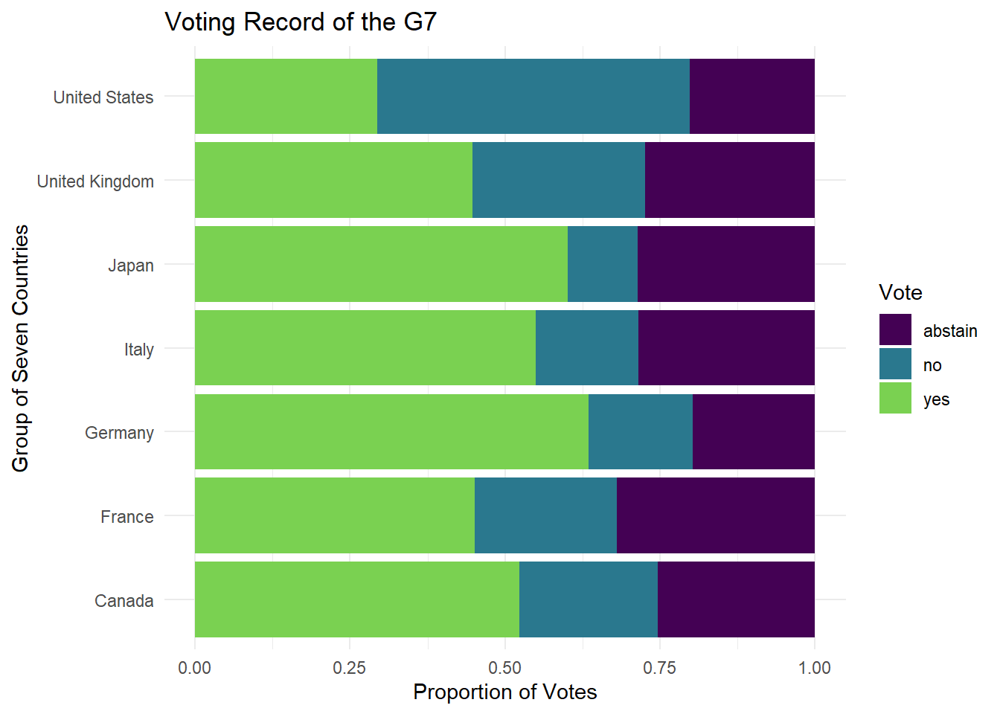
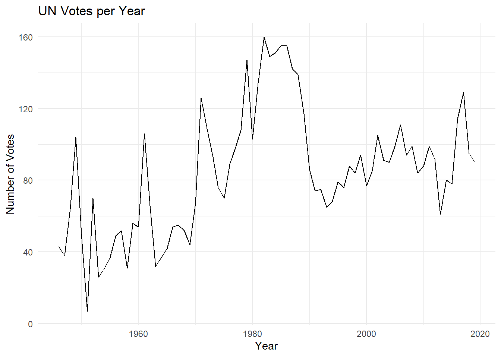
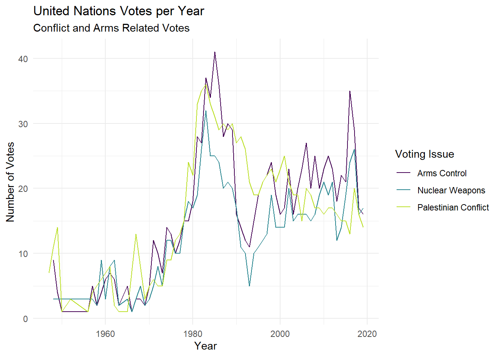
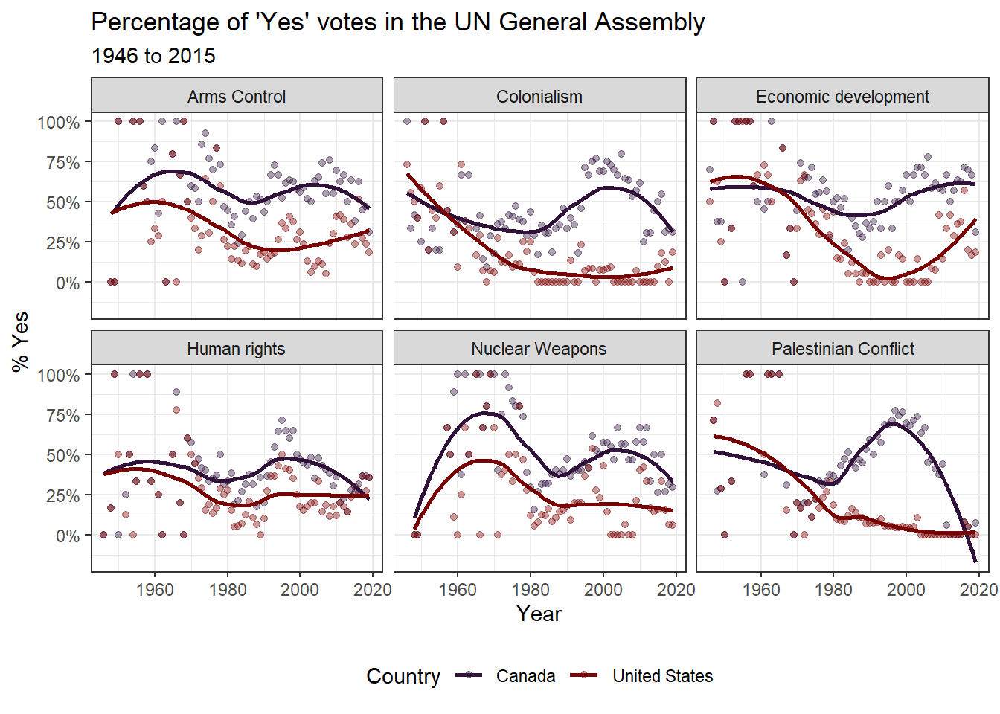
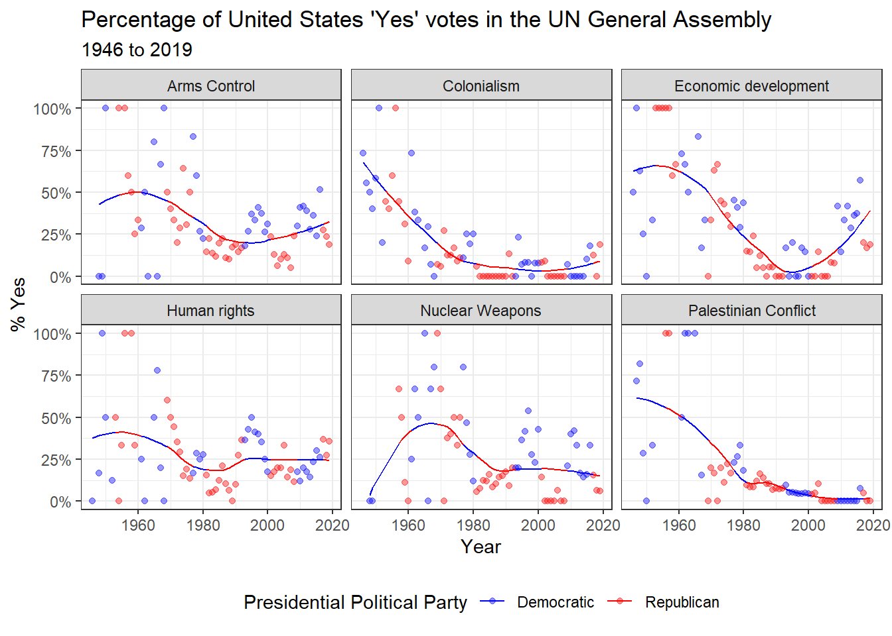

| unvotes | |||
| rcid | country | country_code | vote |
|---|---|---|---|
| 9010 | Australia | AU | abstain |
| 1787 | Romania | RO | yes |
| 3537 | Yugoslavia | YU | yes |
| 1713 | Yemen People's Republic | YD | yes |
| 2516 | Paraguay | PY | yes |
| 2376 | Libya | LY | abstain |
| 1626 | Guyana | GY | yes |
| 2835 | Chad | TD | yes |
| 4472 | Micronesia (Federated States of) | FM | abstain |
| 236 | Liberia | LR | yes |
PA 8: United Nations Voting Records
This task is complex. It requires many different types of abilities. Everyone will be good at some of these abilities but nobody will be good at all of them. In order to solve this puzzle, you will need to use the skills of each member of your group.
Groupwork Protocols
During the Practice Activity, you and your partner will alternate between two roles—Computer and Coder.
When you are the Computer, you will type into the Quarto document in RStudio. However, you do not type your own ideas. Instead, you type what the Coder tells you to type. You are permitted to ask the Coder clarifying questions, and, if both of you have a question, you are permitted to ask the professor. You are expected to run the code provided by the Coder and, if necessary, to work with the Coder to debug the code. Once the code runs, you are expected to collaborate with the Coder to write code comments that describe the actions taken by your code.
When you are the Coder, you are responsible for reading the instructions / prompts and directing the Computer what to type in the Quarto document. You are responsible for managing the resources your group has available to you (e.g., cheatsheet, textbook). If necessary, you should work with the Computer to debug the code you specified. Once the code runs, you are expected to collaborate with the Computer to write code comments that describe the actions taken by your code.
Here are more details of the Pair Programming Protocols
Note
The partner was born the furthest away from CSUMB will start as the Computer (typing and listening to instructions from the Coder).
Group Norms
Remember, your group is expected to adhere to the following norms:
- Be curious. Don’t correct.
- Be open minded.
- Ask questions rather than contribute.
- Respect each other.
- Allow each teammate to contribute to the activity through their role.
- Do not divide the work.
- No cross talk with other groups.
- Communicate with each other!
Goals for the Activity
- Join multiple data tables together by a common variable(s)
- Create new data sets through the joining of data from various sources
- Combine
joinfunctions with othertidyversefunctions
THROUGHOUT THE Activity be sure to follow the Style Guide by doing the following:
- load the appropriate packages at the beginning of the Quarto document
- use proper spacing
- add labels to all code chunks
- comment at least once in each code chunk to describe why you made your coding decisions
- add appropriate labels to all graphic axes
Setting up your Project
Your project should have the following components:
- completed pa-8-united-nations-voting-activity.qmd
- rendered file as
.html
Important
The original Computer should submit the zip file for the canvas quiz. The original Coder can just submit the rendered html file.
Computer - Be sure to share the final .qmd and .html file with the original Coder.
Data Description
The data this week comes from Harvard’s Dataverse by way of Mine Çetinkaya-Rundel, David Robinson, and Nicholas Goguen-Compagnoni.
Original Data citation: Erik Voeten “Data and Analyses of Voting in the UN General Assembly” Routledge Handbook of International Organization, edited by Bob Reinalda (published May 27, 2013). Available at SSRN: http://ssrn.com/abstract=2111149
It was featured on TidyTuesday
Here is each data set and its description (you might want to look at the Tidy Tuesday link for the tables already rendered)
unvotes.csv
| variable | class | description |
|---|---|---|
| rcid | double | The roll call id |
| country | character | Country name, by official English short name |
| country_code | character | 2-character ISO country code |
| vote | integer | Vote result as a factor of yes/abstain/no |
roll_calls.csv
| variable | class | description |
|---|---|---|
| rcid | integer | The roll call id |
| session | double | Session number. The UN holds one session per year; these started in 1946 |
| importantvote | integer | Whether the vote was classified as important by the U.S. State Department report “Voting Practices in the United Nations”. These classifications began with session 39 |
| date | double | Date of the vote, as a Date vector |
| unres | character | Resolution code |
| amend | integer | Whether the vote was on an amendment; coded only until 1985 |
| para | integer | Whether the vote was only on a paragraph and not a resolution; coded only until 1985 |
| short | character | Short description |
| descr | character | Longer description |
| roll_calls | ||||||||
| rcid | session | importantvote | date | unres | amend | para | short | descr |
|---|---|---|---|---|---|---|---|---|
| 790 | 16 | 0 | 1962-02-07 | R/16/1361 | 0 | 0 | U.S. THREATS TO CUBA | TO ADOPT PREAMBLE OF THE MONGOLIAN DRAFT RESOLUTION (A/L.385/REV.1) ON CUBAN COMPLAINT OF U.S. AGRESSION AND INTERVENTION, SAID PREAMBLE ACKNOWLEDGING CONSIDERATION OF THE 1ST COMM. REPORT ON ITEM 78. |
| 1674 | 31 | 0 | 1976-12-02 | R/31/71 | 0 | 0 | DENUCLEARIZATION, MIDDLE EAST | TO EXPRESS THE NEED FOR FURTHER ACTION TO GENERATE MOMENTUM TOWARDS REALIZATION OF THE ESTABLISHMENT OF A NUCLEAR-WEAPON-FREE ZONE IN THE MIDDLE EAST AND TO URGE ALL PARTIES DIRECTLY CONCERNED TO ADHERE TO THE TREATY ON NON-PROLIFERATION OF NUC |
| 2196 | 35 | 0 | 1980-12-03 | R/35/167 | 0 | 0 | LIBERATION MOVEMENTS, DELEGATIONS | TO APPROVE A RESOLUTION CALLING UPON STATES TO ACCORD TO THE DELEGATIONS OF THE NATIONAL LIBERATION MOVEMENTS RECOGNIZED BY THE ORGANIZATION FOR AFRICAN UNITY AND/OR BY THE LEAGUE OF ARAB STATES PRIVILEGES AND IMMUNITIES NECESSARY FOR THE PERFO |
| 4016 | 51 | 0 | 1996-12-06 | R/51/128 | NA | NA | UNRWA | Operations of the United Nations Relief and Works Agency for Palestine Refugees in the Near East |
| 5428 | 70 | 0 | 2015-12-07 | R/70/70 | NA | NA | NA | The risk of nuclear proliferation in the Middle East : resolution / adopted by the General Assembly |
| 9091 | 74 | NA | 2019-12-12 | A/RES/74/30 | NA | NA | Establishment of a nuclear-weapon-free zone in the region of the Middle East | Establishment of a nuclear-weapon-free zone in the region of the Middle East |
| 3094 | 41 | 0 | 1986-12-05 | R/41/209E | NA | NA | POLITICAL, SECURITY AFFAIRS | News Service of the Department of Political and Security Council Affairs |
| 2352 | 37 | 0 | 1982-12-01 | R/37/69H | 0 | 0 | SOUTH AFRICA, ECONOMIC ISOLATION | TO AGAIN URGE THE SECURITY COUNCIL TO CONSIDER AT AN EARLY DATE THE ISSUE OF FOREIGN COLLABORATION WITH SOUTH AFRICA WITH A VIEW TO TAKING EFFECTIVE STEPS TO ACHIEVE THE CESSATION OF FURTHER FOREIGN INVESTMENTS IN, AND FINANCIAL LOANS TO, SOUTH |
| 1630 | 30 | 0 | 1975-11-05 | R/30/3397 | 0 | 0 | SOUTH AFRICA, ARTICLE 25 VIOLATIONS | TO STRONGLY CONDEMN THE POLICIES OF THE GOVERNMENTS, PARTICULARLY THE GOVERNMENT OF SOUTH AFRICA, WHICH, IN VIOLATION OF THE RELEVANT RESOLUTIONS OF THE UNITED NATIONS AND IN OPEN CONTRAVENTION OF THER SPECIFIC OBLIGATIONS UNDER ARTICLE 25 OF T |
| 4078 | 52 | 0 | 1997-12-04 | R/52/65 | NA | NA | ISRAEL, GENEVA CONVENTION | Applicability of the Geneva Convention of 12 Aug. 1949 relative to the occupied Palestinian and other Arab territories |
issues.csv
| variable | class | description |
|---|---|---|
| rcid | integer | The roll call id |
| short_name | character | Two-letter issue codes |
| issue | integer | Descriptive issue name |
| issues | ||
| rcid | short_name | issue |
|---|---|---|
| 1096 | ec | Economic development |
| 9113 | co | Colonialism |
| 4763 | di | Arms control and disarmament |
| 3977 | di | Arms control and disarmament |
| 4205 | me | Palestinian conflict |
| 4164 | hr | Human rights |
| 5154 | di | Arms control and disarmament |
| 3289 | me | Palestinian conflict |
| 3074 | hr | Human rights |
| 5315 | hr | Human rights |
What variable(s) do each of these data frames have in common?
Data Exploration
Our goal today is to explore how various members (countries) in the United Nations vote. We have three data sets, what can we determine from each data set separately?
UN Votes
The first data set, unvotes contains data on the rcid which is the roll call id for the vote, the country/country code, and how the country voted. What can we learn from the data?
Comment on the following code, what is happening in each line? One way to approach seeing what each line does is to highlight the code from before the pipe of that line up to the data unvotes and use CTRL + ENTER to run just the highlighted lines.
unvotes |>
count(country, vote) |> #comment
group_by(country) |> #comment
mutate(total = sum(n)) |> #comment
mutate(prop_vote = n/total) |> #comment
filter(country %in% c("United States", "Canada",
"Germany", "France",
"Italy", "Japan",
"United Kingdom")) |> #comment
ggplot(aes(y = country, x = prop_vote,
fill = vote)) + #comment
geom_col(position = position_stack()) + #comment
labs(y = "Group of Seven Countries",
x = "Proportion of Votes",
title = "Voting Record of the G7",
fill = "Vote") + #comment
theme_minimal() + #comment
scale_fill_viridis_d(end = 0.8) 
Describe what the graph above demonstrates above UN voting records for the G7.
Roll Calls
The second data set, roll_calls has more information on the type of vote, the importance, whether it was a resolution, and date of the vote.
roll_calls |>
distinct(short)# A tibble: 2,019 × 1
short
<chr>
1 AMENDMENTS, RULES OF PROCEDURE
2 SECURITY COUNCIL ELECTIONS
3 VOTING PROCEDURE
4 DECLARATION OF HUMAN RIGHTS
5 GENERAL ASSEMBLY ELECTIONS
6 ECOSOC POWERS
7 POST-WAR RECONSTRUCTION
8 U.N. MEMBERS, RELATIONS WITH SPAIN
9 TRUSTEESHIP AMENDMENTS
10 COUNCIL MEMBER TERM LENGTH
# ℹ 2,009 more rowsWhat does the code above do? What information does it provide? Is it useful? > Description of code results
We can use the individual data for roll_calls to look at the number of votes per year over time.
roll_calls |>
mutate(year = lubridate::year(date)) |> #extracts the year from the date value and creates a new `year` column
count(year) |> #counts how many votes there were per year assuming each line is an single voting instance
ggplot(aes(x = year, y = n)) +
geom_line() +
labs(x = "Year", y = "Number of Votes",
title = "UN Votes per Year") +
theme_minimal()
What information is missing from the above graphic that might be useful in understanding the issues the UN commonly votes on?
Issues
Finally we have the issues data which provides a more general description for each vote on specific issues. Note that not all issues are included in the data set, just the ones related to the 6 issues below:
issues |>
count(issue) |>
adorn_totals("row") #from janitor package issue n
Arms control and disarmament 1092
Colonialism 957
Economic development 765
Human rights 1015
Nuclear weapons and nuclear material 855
Palestinian conflict 1061
Total 5745Notice the size of the issues data - it has 5745 rows, but if look at the distinct number of roll call identification numbers, you will see that there are 4099, meaning that more than one issue can be associated with the same roll call id/vote.
issues |>
distinct(rcid) |>
n_distinct()[1] 4099Recall that in roll_call there are 6202 distinct roll call ids/votes, so the issues associated with issues do not represent all votes (i.e., there were other U.N. votes on other issues than our 6 chosen issues).
roll_calls |>
distinct(rcid) |>
n_distinct()[1] 6202It would be helpful to use the issues data with the roll_calls data to be able to better understand the voting trends within the UN on these 6 issues. To do this, we need to join the data.
Votes Over Time
Now let’s join our data together to get a better idea of how the UN has voted over time.
First, look at the number of rows in issues and roll_calls - do they match? What does this indicate?
dim(issues)[1] 5745 3dim(roll_calls)[1] 6202 9Now let’s try joining the roll_calls with the issues data. Compare the following codes to join the data. Describe what each one does and how it differs from the others as a comment in the code chunk. You might need to reference the slides or reading for this week.
roll_calls |>
left_join(issues, by = "rcid") #description of joinroll_calls |>
right_join(issues, by = "rcid") #description of joinroll_calls |>
full_join(issues, by = "rcid") #description of joinroll_calls |>
inner_join(issues, by = "rcid") #description of joinIf we are only interested in retaining the records associated with the issues labeled in that data frame, ignoring the other votes, which join should we use?
Now that we know how to join the data, we will use the following code to examine the the voting trends for three of the issues related to conflict/weapons.
Be sure to run the code via the green arrow on the code chunk, as the case_when() code can get finicky sometimes and claim an error about a comma in the code when it doesn’t exist. Comment on the code where indicated and add your chosen join function
roll_calls |>
__________join(issues, by = "rcid") |> #join roll_calls and issues so that just the votes related to the issues data are retained.
mutate(issue_short = case_when(
issue == "Arms control and disarmament" ~ "Arms Control",
issue == "Nuclear weapons and nuclear material" ~ "Nuclear Weapons",
issue == "Palestinian conflict" ~ "Palestinian Conflict",
TRUE ~ issue)) |> #what is happening in this mutate function?
filter(issue_short %in% c("Arms Control",
"Nuclear Weapons",
"Palestinian Conflict")) |> #what are we doing here?
mutate(year = lubridate::year(date)) |> #create a column `year` that contains the year value
count(year,
issue_short) |> #what does this line do?
ggplot(aes(x = year,
y = n,
group = issue_short)) + #what does this line do?
geom_line(aes(color = issue_short)) + #what does this line do?
labs(x = "Year",
y = "Number of Votes",
title = "United Nations Votes per Year",
subtitle = "Conflict and Arms Related Votes",
color = "Voting Issue") +
theme_minimal() +
scale_color_viridis_d(end = 0.9)
What do you notice? What do you wonder based on the graph created?
Joining all Data
We want to try create a visualization that compares the voting records of the US and Canada on the 6 major issues of interest. To do this, though, we need information from all three data set, unvotes, issues, and roll_calls
We want to join all three data sets together, maintaining only the votes for which we have identified the general issue (e.g., Nuclear War, Arms, Economics, etc.), but recognizing that each rcid will match MULTIPLE rows in the unvotes because we have each individual country’s vote. We will save (assign) the data as un_full.
un_full <- roll_calls |>
right_join(issues, by = "rcid") |>
left_join(unvotes, by = "rcid",
multiple = "all",
relationship = "many-to-many") Describe what each join is doing and why each join has specific arguments.
Note
It will be helpful to look up the arguments in the left_join() function on the dplyr webpage.
Now, we are going to do some data cleaning. Our goal is create a data set that includes the percentage of “yes” votes per country each year. We will call the data table yes_votes. Provide a comment to describe what each line of code is doing in the process.
yes_votes <- un_full |>
select(country,
issue,
date,
vote) |> # your comment here
mutate(year = lubridate::year(date)) |> #create a new variable called year
group_by(country,
year,
issue) |> # your comment here
summarize(prop_yes = mean(vote == "yes"),
.groups = "drop_last") |> #calculate the proportion of yes votes
mutate(issue = case_when(
issue == "Arms control and disarmament" ~ "Arms Control",
issue == "Nuclear weapons and nuclear material" ~ "Nuclear Weapons",
issue == "Palestinian conflict" ~ "Palestinian Conflict",
TRUE ~ issue)) # your comment hereNow we can feed the yes_votes transformed data table into your graphing code, but first we will want to focus on the United States and Canada. Provide a comment to describe what each line of code is doing in the process.
yes_votes |>
filter(country %in% c("United States","Canada")) |> # your comment here
ggplot(mapping = aes(x = year, y = prop_yes, color = country)) + # your comment here
geom_point(alpha = 0.4) + # your comment here
#geom_line(aes(group = country)) +
geom_smooth(method = "loess", se = FALSE) + #this fits a special model called a loess regression, a smooth line that fits the data
facet_wrap(~issue) + # your comment here
scale_y_continuous(labels = scales::percent) + #your comment here
labs(
title = "Percentage of 'Yes' votes in the UN General Assembly",
subtitle = "1946 to 2019",
y = "% Yes",
x = "Year",
color = "Country"
) + #your comment here
theme_bw() +
theme(legend.position = "bottom") + #your comment here
scale_color_viridis_d(option = "turbo") #your comment here
What do you notice about the voting records over time?
Demonstration: Adding more data
After your instructor created the above plot, she became curious about how politics might impact the UN Voting record for the United States since UN Ambassador is a presidential appointment. So your instructor started searching for a data set of US presidents, their years in office, and their political affiliation. She found a data set on Kaggle.com and removed the information prior to 1940 (because the dates were coded funny and it was causing problems). She saved the data as us_presidents.csv and imported it into the project.
president <- read_csv("data/us_presidents.csv", show_col_types = FALSE)
slice_sample(president, n = 10) |>
gt() |>
tab_header(title = "president")| president | |||||||
| id | S.No. | start | end | president | prior | party | vice |
|---|---|---|---|---|---|---|---|
| 38 | 39 | 1/20/1977 | 20-Jan-81 | Jimmy Carter | 76th Governor of Georgia (1971–1975) | Democratic | Walter Mondale |
| 31 | 32 | 3/4/1933 | 20-Jan-41 | Franklin D. Roosevelt | 44th Governor of New York ( 1929–1932 ) | Democratic | John Nance Garner |
| 30 | 31 | 3/4/1929 | 4-Mar-33 | Herbert Hoover | 3rd United States Secretary of Commerce (1921–1928) | Republican | Charles Curtis |
| 27 | 28 | 3/4/1913 | 4-Mar-21 | Woodrow Wilson | 34th Governor of New Jersey (1911–1913) | Democratic | Thomas R. Marshall |
| 32 | 33 | 4/12/1945 | 20-Jan-53 | Harry S. Truman | 34th Vice President of the United States | Democratic | Office vacant |
| 42 | 43 | 1/20/2001 | 20-Jan-09 | George W. Bush | 46th Governor of Texas ( 1995–2000 ) | Republican | Dick Cheney |
| 25 | 26 | 9/14/1901 | 4-Mar-09 | Theodore Roosevelt | 25th Vice President of the United States | Republican | Office vacant |
| 44 | 45 | 1/20/2017 | -- | Donald Trump | Chairman of The Trump Organization ( 1971–present ) | Republican | Mike Pence |
| 37 | 38 | 8/9/1974 | 20-Jan-77 | Gerald Ford | 40th Vice President of the United States | Republican | Office vacant |
| 36 | 37 | 1/20/1969 | 9-Aug-74 | Richard Nixon | 36th Vice President of the United States (1953–1961) | Republican | Spiro Agnew |
She realized that her data only had the start/end dates for each president and she wanted a data set that filled in the missing years and political party for the president in that time period. After much googling and reading Stack Overflow, found two functions she did not know about called complete() and fill() to fill in the missing years and party affiliations
politics_year <- president |>
mutate(start = lubridate::mdy(start), #formats date correctly
start_year = lubridate::year(start)) |> #pulls out year
filter(start_year > 1940) |> #removes data before 1940 since there was no UN
select(start_year, party) |> #pulls out just the variables of interest
complete(start_year = seq(min(start_year), 2020, by = 1)) |> #fill in missing years
fill(party) #fill in missing party affiliations for years
slice_tail(politics_year, n = 10) |>
gt() |>
tab_header(title = "Year by Presidential Party")| Year by Presidential Party | |
| start_year | party |
|---|---|
| 2011 | Democratic |
| 2012 | Democratic |
| 2013 | Democratic |
| 2014 | Democratic |
| 2015 | Democratic |
| 2016 | Democratic |
| 2017 | Republican |
| 2018 | Republican |
| 2019 | Republican |
| 2020 | Republican |
Next, your instructor took the yes_votes data and filtered out just the United States data and then joined by year to add the party affiliation of the president for each year of UN votes. To create the visualization with the smoothed model, but color by party affiliation, she had to add a new column called predict that fit the model first instead of using geom_smooth().
yes_votes |>
filter(country == "United States") |> #we want to focus on the US
left_join(politics_year,
by = c("year" = "start_year")) |> #adding in president political affiliation data
group_by(issue) |> #we want to calculate predicted yes by issue type
mutate(predict = predict(loess(prop_yes ~ year))) |> #creates predictions using a loess model for yes vs year
ungroup() |> #ungroups the group_by line so it doesn't mess with other calculations
ggplot(mapping = aes(x = year,
color = party,
group = 1)) + #sets universal aes to observe changes over time
geom_point(aes(y = prop_yes),
alpha = 0.4) + #plots points for proportion yes but transparent
geom_line(aes(y = predict)) + #plots the predicted yeses for votes
facet_wrap(~issue) + #creates a plot for each issue
scale_y_continuous(labels = scales::percent) + #scales y-axis as percent values
labs(
title = "Percentage of United States 'Yes' votes in the UN General Assembly",
subtitle = "1946 to 2019",
y = "% Yes",
x = "Year",
color = "Presidential Political Party"
) + #adds labels
theme_bw() + #changes appearance
scale_color_manual(values = c("blue", "red"),
breaks = c("Democratic", "Republican")) + #sets specific colors for each party
theme(legend.position = "bottom") #moves legend to bottom to create space